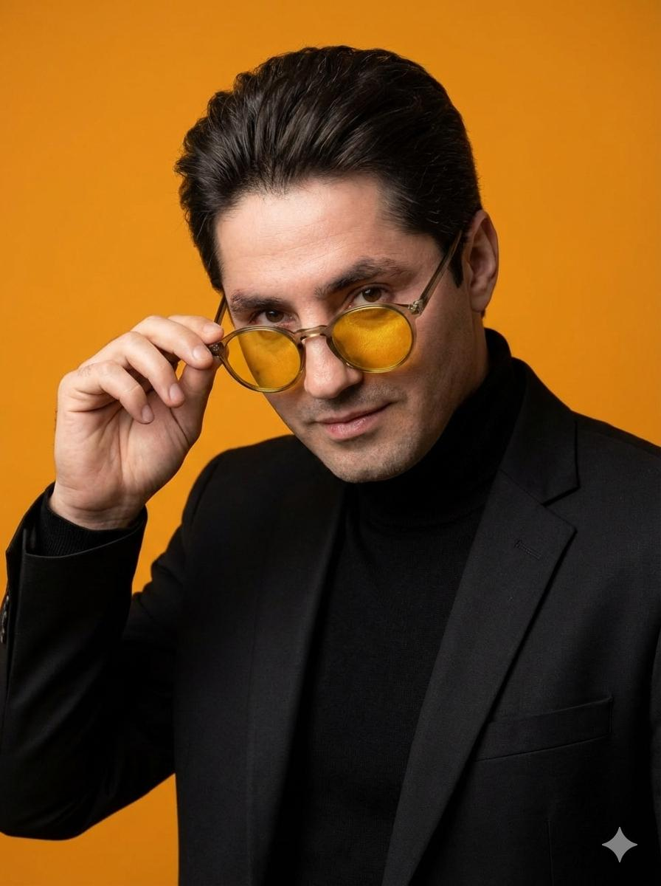
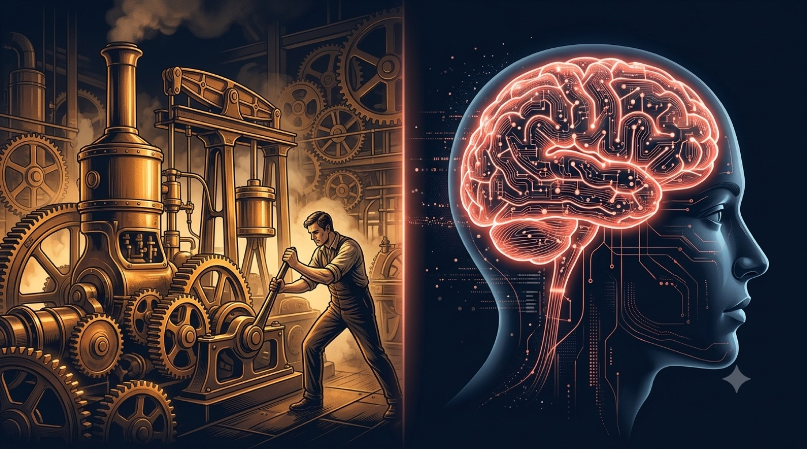
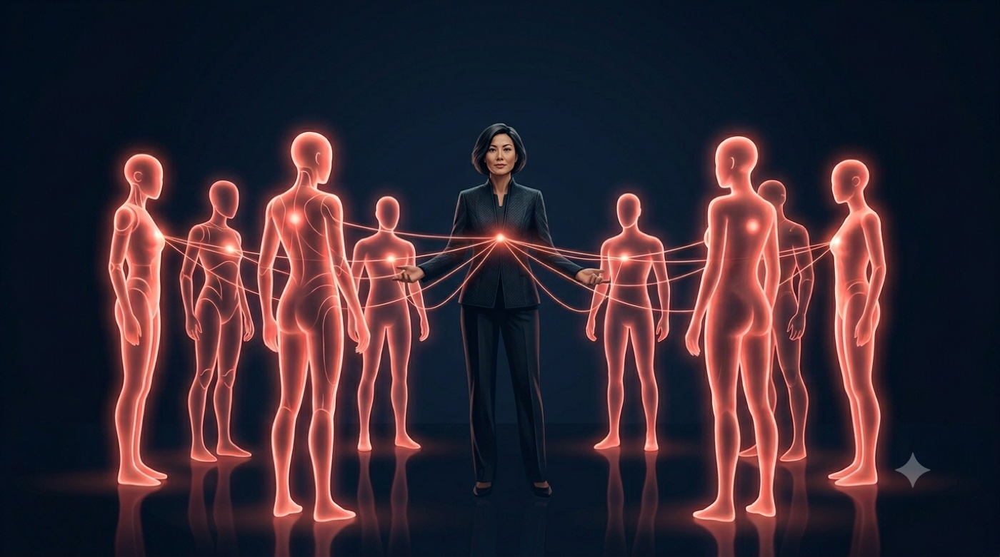
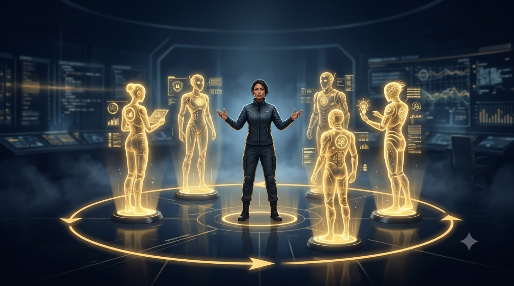

ИИ: твой новый конкурент
или союзник?

Давайте поймём, на каком вы этапе
Поднимите руку, если это про вас. Так я подстрою примеры под ваш уровень и ваши задачи.
Пользуюсь сам
Открываю нейросеть почти каждый день под рабочие задачи.
Команда уже пробует
Кто-то из сотрудников использует ИИ, иногда втихую.
Внедряли осознанно
Под конкретные задачи, а не «просто попробовать».
Пробовал и бросил
Спросил пару раз, ответы так себе, вернулся к рукам.
Использую для жизни
Письма, планы, поездки, учёба детей.
Готов начать
Понимаю, что пора, но руки пока не дошли.
ИИ это новое электричество
Электричество усилило руки человека: станки, двигатели, конвейер. Искусственный интеллект усиливает голову: анализ, решения, тексты. Это технология общего назначения, и она входит в каждый процесс компании.

Правила поменялись для всех
Один за пятерых
Ценность сотрудника не в одной задаче, а в том, сколько он закрывает с помощью ИИ.
Приходят с командой
Брать будут тех, кто приводит с собой готовый набор ассистентов и агентов.
Сильная позиция на рынке
Специалист с ИИ делает объём целого отдела. И уже он выбирает, где, с кем и за сколько работать.
Три этапа развития ИИ в бизнесе
Сегодня работаем с первым этапом: его достаточно, чтобы стать конкурентнее большинства. Про второй и третий расскажу в конце.
Сегодня вы всё сделаете своими руками
Никаких лекций про «когда-нибудь». Телефона достаточно, ноутбук ещё лучше.
Практика первого этапа
Настроим персонализацию и освоим промпт-инженерию: навык, который работает в любой нейросети.
Экосистема ChatGPT
Покажу, как из промптов вырастает целая команда: проекты, ассистенты, скиллы.
Куда это растёт
Второй и третий этапы: агенты и компания вокруг ИИ. Коротко, как карта.
Большой бонус в конце
Библиотека из 20+ мастер-промптов, которую обычно получают только мои ученики. Придёт прямо в чат клуба.
AI-native команда
Обучаем команду и даём каждому набор ИИ-инструментов под его задачи. Человек за рулём, скорость в разы выше. Самый быстрый результат и низкий порог входа. Многим компаниям этого шага уже достаточно.
Когнитивный экзоскелет
У каждой роли свой набор ИИ-помощников. ИИ берёт на себя черновую работу: поиск, анализ, тексты, варианты решений. Человек остаётся автором и принимает финальное решение.

Не одна нейросеть, а набор под задачи
Под каждую задачу свой инструмент. Достаточно одного-двух основных, чтобы начать.
Откройте шпаргалку
Наведите камеру на QR-код. Внутри все промпты вечера: нажали на блок, скопировалось, вставили в чат.
Спроси у нейросети.
materials.neovida.ai/v-fokuse/praktika.html
От разовых запросов к личному помощнику
Каждый раз объясняешь заново, кто ты, что за компания и что нужно. Полезно, но недолговечно.
Настроен под сотрудника: знает его роль, файлы, прайсы и стиль. Отвечает по вашим данным и готовит работу на опережение.
Удачные сценарии закрепляются в постоянных помощниках. Это и есть мостик ко второму этапу.
Расскажите ИИ о себе
Все начинают с вопросов. А начинать надо с настройки: инструмент, который не знает, кто вы, отвечает незнакомцу.
Досье
ИИ сам берёт у вас интервью и собирает рабочее досье.
Персонализация
Вставляем досье в настройки: теперь он помнит вас в каждом чате.
Инструкция качества
Учим отвечать на уровне 98 из 100, без ИИ-следов.
Проверка
Один вопрос в новом чате. Увидите сами, что изменилось.
Карта процессов
Глубокий промпт: где ИИ усилит именно вас.
Досье: ИИ интервьюирует вас
Не вы ему пишете, а он вам задаёт вопросы. По одному, как хороший наставник. Промпт в шпаргалке, шаг 1.
Кто вы
Роль, сфера, опыт, сильные стороны.
Ваша рутина
Что пишете, считаете, проверяете, согласовываете.
Боли и цели
Где горит время и что хотите улучшить за месяц.
Вставьте досье в персонализацию
Одна настройка, и ChatGPT помнит вас в каждом новом чате.
Скопируйте блок «РАБОЧЕЕ ДОСЬЕ»
Он появится в конце интервью.
Настройки → Персонализация
Первое большое поле «о себе». Название может отличаться, точный путь в шпаргалке.
Включите память и сохраните
Memory: ON, остальные переключатели тоже.
Инструкция качества
Второе поле персонализации. Эта инструкция меняет сам способ, которым ИИ отвечает вам. Полный текст в шпаргалке, шаг 3.
Самопроверка до 98 из 100
Перед ответом ИИ сам строит критерии идеала и переделывает ответ, пока не дотянет.
Без ИИ-следов
Убирает длинное тире, главный маркер машинного текста. Ваши письма перестают «пахнуть нейросетью».
Проверка: он помнит
Откройте новый чат и задайте один вопрос.
Это инструмент, который знает, на кого работает.
Глубокий промпт: карта ваших процессов
Главный промпт практики. ИИ смотрит на вашу неделю и честно говорит, где он вас усилит. Шпаргалка, шаг 5.
Разложит неделю на 8-12 процессов
Конкретно под вашу роль, не универсальные советы.
Оценит каждый по шкале от 1 до 10
Насколько сильно он может усилить процесс уже сегодня.
Выберет три с максимальным эффектом
Что берёт на себя, сколько часов освобождает, с какого промпта начать.
Назовёт один, с которого начал бы сам
«Если бы я работал у вас, я бы взял вот этот».
Формула РКЗФО
Промпт это не магия, а техзадание словами. Пять элементов, и размытая просьба становится чёткой задачей.
Роль
Кем должен быть ИИ: маркетолог, юрист, финансист, наставник.
Контекст
Кто вы, ваш бизнес или работа, ситуация.
Задача
Что именно нужно получить на выходе.
Формат
Таблица, список, письмо, план, текст на N слов.
Ограничения
Чего не делать, какой тон не использовать.
Один запрос, два результата
«Напиши пост про нашу услугу»
Роль: маркетолог для малого бизнеса.
Контекст: семейная кофейня, клиенты: мамы и удалёнщики.
Задача: пост о новом завтраке за 350 рублей.
Формат: 600 знаков, живой тон, вопрос в конце.
Ограничения: без слов "уникальный" и "лучший".
Теперь ваша очередь: возьмите свою реальную задачу и соберите запрос по формуле. Каркас в шпаргалке.
Первый ответ это всегда черновик
Ответ нейросети должен пройти согласование, как договор в компании. Четыре промпта по очереди, в том же чате.
Совет директоров
Разбивает решение: смотрим на ответ глазами разных людей.
Адвокат дьявола
Разбивает логику: слабые места, риски, альтернатива.
Факт-контроль
Разбивает факты: отделяем знание от красивой выдумки.
Совет директоров
Выносим ответ на совет из четырёх участников. Им разрешено спорить друг с другом.
Прагматик-управленец
Что реально сделать на этой неделе.
Стратег
Мыслит годами, а не днями.
Прямолинейный скептик
Ищет дыры в рассуждениях.
Мудрый наставник
Спрашивает о том, что по-настоящему важно.
Смотрите, кого он позовёт именно вам.
Адвокат дьявола
Не «проверь себя» (он ответит «всё нормально»). Заставляем разнести собственный ответ в пух и прах.
Факт-контроль
ИИ ошибается уверенно: тем же спокойным голосом, что и когда прав. Поэтому факты проверяем отдельным приёмом.
Факты
В чём уверен и что можно проверить.
Предположения
Звучит правдоподобно, но подтвердить не может.
Проверить человеку
Цифры, цены, законы, имена, даты. И где именно проверить.
Соберите итог
Последний промпт конвейера: собрать финальную версию с учётом совета, критики и проверки фактов.
Вот сколько качества вы оставляли на столе.
Обратный промптинг
Нравится чужой текст и хочется «так же»? Не описывайте стиль словами.
«Напиши в лёгком дружелюбном стиле, но экспертно и не слишком официально...»
«Вот образец текста, который мне нравится. Разбери его как промпт-инженер: стиль, структура, тон, приёмы. Составь промпт, который пишет в точно таком же стиле»
ИИ сам извлечёт рецепт из образца. В шпаргалке четыре готовых разбора: текст, изображение, КП, договор.
Пусть ИИ спросит первым
Одна строка в конец любого запроса. Проблема чаще не в нейронке, а в том, что она не знала контекста.
Наговорите голосом
Не пишите промпт. Нажмите микрофон, выговорите мысль любым бардаком, и в конце добавьте одну фразу.
Инженерный промпт на выходе.
Проект, ассистент, скилл
Три слова, которые превращают чат в рабочий офис. Один раз поймёте, и вся экосистема складывается.
Один аккаунт, целая команда
Проекты офис
Файлы, инструкции и чаты одной темы.
Ассистенты сотрудники
Своя инструкция и своя база знаний.
Скиллы навыки
Нужное умение любому сотруднику в моменте.
Память личное дело
Помнит вас в каждом чате.
Голос разговор
Живой разговор на ходу и за рулём.
Deep Research аналитик
15-20 минут работы, отчёт со ссылками.
Автоматизации расписание
Проснулись, а сводка уже в чате. Он работал ночью.
Коннекторы руки
Почта, календарь, диск: сам дотянется.
Codex программист
Описали приложение словами, получили работающее. Без программистов.
ИИ работает, пока вы спите
Функция «Запланировано»: задачи выполняются сами по расписанию. Коннекторы дают руки: почта, календарь, диск.
Утренняя сводка
Каждый будний день в 8:30: новости вашей ниши и что они значат для бизнеса.
Дозор за конкурентами
Следит за ценами и акциями, сообщает об изменениях.
Пятничный разбор
Сам приходит с вопросами ретро в конце недели.
Вопрос дня
Наставник каждое утро возвращает фокус на цель.
Законы для МСБ
Раз в неделю: что поменялось в правилах игры.
Отчёт на почту
Через коннектор: результат уходит письмом, кому скажете.
он вернётся с результатом сам.
Ассистентами можно делиться
Проекты и ассистенты передаются коллегам. Так из личного помощника вырастает команда.
Поделиться проектом
Весь отдел работает в одном контексте: файлы, инструкции, история.
Подарить ассистента
Собрали «переговорщика» или «юриста»? Отправьте коллеге, он работает сразу.
Соберите свою ИИ-команду
Шаг 1 делаем все вместе, он работает в любой нейросети. Остальное покажу: инструкции в шпаргалке, на вырост.
Наставник
Конструктор берёт у вас интервью и собирает личного наставника под вашу цель.
Ассистент: у него роль
Промпт наставника из шага 1 вставляем в инструкции ассистента. Наставник становится сотрудником.
Проект: у него контекст
Описание отвечает «про что это всё». Вызываем ассистента через @ прямо в чате проекта: сотрудник работает в офисе.
Навык: у него процедура
Скачиваем «Аудит договора», добавляем через плюсик, вызываем через @.
Запланировано: у него расписание
Задача выполняется сама и приносит результат в чат. Ту, что я поставил раньше, сейчас проверим.
У Claude так же
Экосистемный подход уже стандарт индустрии. Логика одна: проекты, инструкции, навыки, коннекторы.
Projects
Те же «офисы» с файлами и контекстом.
Skills
Навыки, которые подключаются под задачу.
Коннекторы
Доступ к вашим сервисам и данным.
Выбирайте инструмент под себя. Навык постановки задачи, который вы освоили сегодня, работает везде.

Каким станет сотрудник к 2027 году
Не специалист с одной функцией, а человек со своей командой ИИ-агентов. Он перестаёт быть исполнителем рутины и становится тем, кто ставит задачи и отвечает за результат.

AI-driven компания
ИИ накладывается поверх ваших процессов: точечные агенты автоматизируют отдельные задачи, а данные живут в едином защищённом контуре с базой знаний. Это локальные автоматизации под конкретные задачи, а не вся компания на агентах.
Агент это не чат.
Это работник
Чат отвечает на вопрос. Агент доводит задачу до результата: сам находит информацию, делает, проверяет себя и останавливается на решении человека.
Единый контур и база знаний
У компании появляется одна общая память: документы, регламенты, переписки в одном месте. ИИ отвечает по вашим данным и показывает, откуда взял ответ. И данные не уходят из компании.

Почему нельзя перепрыгнуть этап
Контур строится не на хаосе. Сначала порядок, потом автоматизация. Так проходит каждая компания.
Очное обучение команды
Люди начинают пользоваться ИИ и видят пользу на своих задачах.
Глубинные интервью и аудит процессов
Разбираем, как всё устроено, где сломано, где теряется информация.
Наводим порядок, затем строим контур
Сначала рабочие процессы и чистые данные, потом единая база и агенты.
AI-first компания
Все процессы соединены в единую агентную ОС. Агенты сами ведут задачи, ходят по процессам и обучаются. Человек переходит в роль оператора: наблюдает, иногда вмешивается, правит и подтверждает. Это уже не точечные автоматизации, а вся компания вокруг ИИ.
Команда агентов и самоулучшение
Не один универсал, а команда узких агентов вокруг человека-оператора: исполнитель, аналитик, контролёр, координатор. Каждое решение человека делает систему умнее.

Компании, которые уже прошли этот путь
Сервис офисной техники
У каждой роли свой ассистент. Тендерная заявка за часы, а не дни.
Телеканал
Редакция на конвейере ассистентов. Сюжет от темы до эфира втрое быстрее.
Гостиница
Консьерж-агент и база знаний. Гость получает ответ за секунды, круглосуточно.
Производство
От тендера до отгрузки без ручной перепечатки данных.
Все они начинали ровно с того, что вы сделали сегодня: этап 1, команда и навык.
Бонус: библиотека мастер-промптов
Та самая библиотека, которую получают ученики моих платных курсов. Сегодня вечером придёт в чат клуба, каждому, бесплатно.
Мастер-промпты
Переговорщик, жёстко честный советник, разбор договора, аудит жизни. Всего 20+.
Установка ChatGPT
Пошагово для iPhone и Android, со всеми обходами.
Оплата из России
Рабочие способы оплатить подписку.
Просто откройте чат клуба сегодня вечером.
Что сделать уже на этой неделе
Поставьте одну нейросеть на телефон
Лучше ChatGPT. Инструкции для iPhone и Android в шпаргалке.
Одна задача в день по формуле РКЗФО
Любая рабочая или личная. Через неделю формула станет рефлексом.
Один ответ прогоните через конвейер
Совет директоров, адвокат дьявола, факт-контроль, итог.
Замерьте «до и после»
Возьмите процесс из своей карты и посчитайте сэкономленные часы.
Людей заменят те, кто умеет с ними работать.
Три этапа это карта: AI-native команда, AI-driven компания, AI-first компания. Лучшее время войти это сегодня.
ИИ: конкурент или союзник?
Сегодня вы ответили на этот вопрос руками. Мне важно, чтобы о таких вечерах узнали и ваши друзья, поэтому предлагаю обмен.